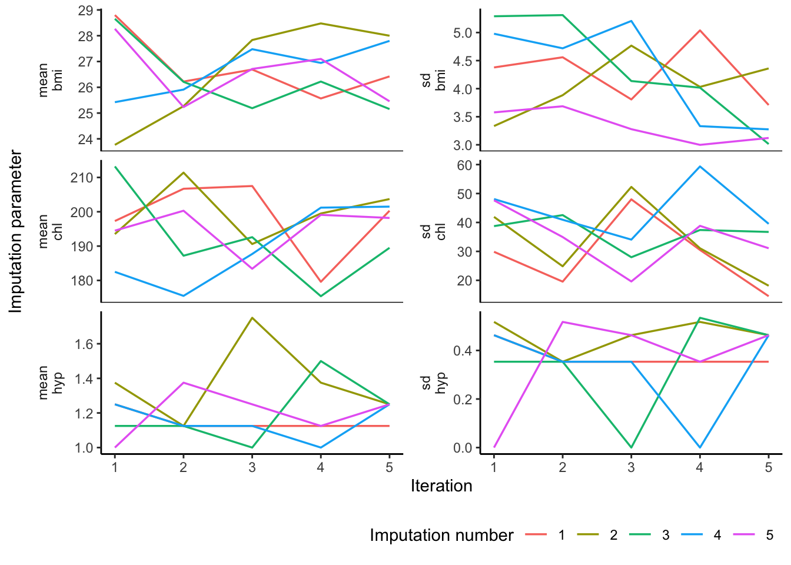

![]()
Code
library(mice) # data imputation
library(ggmice) # plotting
library(ggplot2) # plotting
library(dplyr) # data manipulation
library(purrr) # functional programming
library(magrittr) # pipe operatorsA very quick crash course in mice
Vandaag gaan we zelf data maken. Op het eerste gezicht klinkt dat misschien een beetje frauduleus - hoe komen we aan die data en waarom zou deze data goed zijn? We zullen zien dat we data-gebaseerde en informatie-gebaseerde modellen kunnen gebruiken om valide inferentie (gevolgtrekkingen) te kunnen trekken op basis van bestaande - al dan niet compleet geobserveerde - data. We gebruiken daarvoor veel van de technieken en theorie die we tot nu toe hebben geleerd. Eigenlijk komt alles wat we tot nu toe hebben besproken samen in dit college. De collegeslides kunt u hier vinden
The aim of this guide is to make you familiar with mice in R and to enhance your understanding of multiple imputation, in general. You will learn how to perform and inspect multiple imputations and how to pool the results of analyses performed on multiply-imputed data, how to approach different types of data and how to avoid some of the pitfalls many data scientists may fall into. The main objective is to increase your knowledge and understanding on applications of multiple imputation.
We start by loading (with library()) the necessary packages and fixing the random seed to allow for our outcomes to be replicable.
library(mice) # data imputation
library(ggmice) # plotting
library(ggplot2) # plotting
library(dplyr) # data manipulation
library(purrr) # functional programming
library(magrittr) # pipe operatorsmiceWe fix the RNG seed to allow for replication of the below results.
set.seed(123)The mice package contains several datasets. Once the package is loaded, these datasets can be used. Have a look at the nhanes dataset (Schafer, 1997, Table 6.14) by typing
nhanes age bmi hyp chl
1 1 NA NA NA
2 2 22.7 1 187
3 1 NA 1 187
4 3 NA NA NA
5 1 20.4 1 113
6 3 NA NA 184
7 1 22.5 1 118
8 1 30.1 1 187
9 2 22.0 1 238
10 2 NA NA NA
11 1 NA NA NA
12 2 NA NA NA
13 3 21.7 1 206
14 2 28.7 2 204
15 1 29.6 1 NA
16 1 NA NA NA
17 3 27.2 2 284
18 2 26.3 2 199
19 1 35.3 1 218
20 3 25.5 2 NA
21 1 NA NA NA
22 1 33.2 1 229
23 1 27.5 1 131
24 3 24.9 1 NA
25 2 27.4 1 186The nhanes dataset is a small data set with non-monotone missing values. It contains 25 observations on four variables:
age: age groupbmi: body mass indexhyp: hypertensionchol: cholesterol (mg/dL).To learn more about the data, use one of the two following help commands:
help(nhanes)
?nhanesThe nhanes dataset is incomplete. We can visualize the missing data patterns by
md.pattern(nhanes)
age hyp bmi chl
13 1 1 1 1 0
3 1 1 1 0 1
1 1 1 0 1 1
1 1 0 0 1 2
7 1 0 0 0 3
0 8 9 10 27For more informative axis labels, we can use the equivalent ggmice function plot_pattern() as follows
plot_pattern(nhanes)
Although the most common pattern is the one where all variables are observed, the majority of cases have at least one missing value.
1. Vary the number of imputations, such that the nhanes set is imputed \(m=3\) times.
The number of imputed data sets can be specified by the m = ... argument. For example, to create just three imputed data sets, specify
imp <- mice(nhanes, m = 3, print = FALSE)The print = FALSE argument omits printing of the iteration history from the output. The main reason to omit printing here is to save space in the document.
2. Now impute the nhanes data \(m=5\) times. Inspect the convergence of the algorithm
The mice() function implements an iterative Markov Chain Monte Carlo type of algorithm. Let us have a look at the trace lines generated by the algorithm to study convergence:
imp <- mice(nhanes, m = 5)
iter imp variable
1 1 bmi hyp chl
1 2 bmi hyp chl
1 3 bmi hyp chl
1 4 bmi hyp chl
1 5 bmi hyp chl
2 1 bmi hyp chl
2 2 bmi hyp chl
2 3 bmi hyp chl
2 4 bmi hyp chl
2 5 bmi hyp chl
3 1 bmi hyp chl
3 2 bmi hyp chl
3 3 bmi hyp chl
3 4 bmi hyp chl
3 5 bmi hyp chl
4 1 bmi hyp chl
4 2 bmi hyp chl
4 3 bmi hyp chl
4 4 bmi hyp chl
4 5 bmi hyp chl
5 1 bmi hyp chl
5 2 bmi hyp chl
5 3 bmi hyp chl
5 4 bmi hyp chl
5 5 bmi hyp chlplot_trace(imp)
The plot shows the mean (left) and standard deviation (right) of the imputed values only. In general, we would like the streams to intermingle (mixing) and be free of any trends at the later iterations (non-stationary). We inspect trends for the imputed values alone, because the observed data does not change. In our case we cannot speak of convergence, especially not for bmi. More iterations or a different model are needed.
3. Impute the nhanes data again, but now fix the random seed to be able to reproduce the imputations.
The mice algorithm uses random sampling, and therefore, the results will be (perhaps slightly) different if we repeat the imputations with different seeds. In order to get identical mice objects between calls, we can fix the use the seed argument.
imp <- mice(nhanes, seed = 123, print = FALSE)
# or
set.seed(123)
imp <- mice(nhanes, print = FALSE)where 123 is some arbitrary number that you can choose yourself. Rerunning this command will always yields the same imputed values.
4. See which imputation method was used by studying the method dimension in the imp object. HINT: you can take the correct dimension from the imp object with the $ operator
For each column, the algorithm requires a specification of the imputation method. To see which method was used by default:
imp$method age bmi hyp chl
"" "pmm" "pmm" "pmm" The variable age is complete and therefore not imputed, denoted by the "" empty string. The other variables have method pmm, which stands for predictive mean matching, the default in mice for numerical and integer data.
In reality, the nhanes data are better described a as mix of numerical and categorical data. Let us take a look at the nhanes2 data frame:
summary(nhanes2) age bmi hyp chl
20-39:12 Min. :20.40 no :13 Min. :113.0
40-59: 7 1st Qu.:22.65 yes : 4 1st Qu.:185.0
60-99: 6 Median :26.75 NA's: 8 Median :187.0
Mean :26.56 Mean :191.4
3rd Qu.:28.93 3rd Qu.:212.0
Max. :35.30 Max. :284.0
NA's :9 NA's :10 and the structure of the data frame
str(nhanes2)'data.frame': 25 obs. of 4 variables:
$ age: Factor w/ 3 levels "20-39","40-59",..: 1 2 1 3 1 3 1 1 2 2 ...
$ bmi: num NA 22.7 NA NA 20.4 NA 22.5 30.1 22 NA ...
$ hyp: Factor w/ 2 levels "no","yes": NA 1 1 NA 1 NA 1 1 1 NA ...
$ chl: num NA 187 187 NA 113 184 118 187 238 NA ...Variable age consists of 3 age categories, while variable hyp is binary. The mice() function takes these properties automatically into account.
5. Impute the nhanes2 dataset with mice and inspect which methods are now used for imputing the columns.
imp <- mice(nhanes2, print = FALSE)
imp$meth age bmi hyp chl
"" "pmm" "logreg" "pmm" Notice that mice has set the imputation method for variable hyp to logreg, which implements multiple imputation by logistic regression.
If you correctly have set the measurement levels of your data variables, mice will by default apply the correct imputation method. If you have not set the measurement levels, mice may falsely assume that a variable is of a different nature. This may lead to unexpected results, so it is always a good idea to check the measurement levels of your data before running mice().
Now we may again plot trace lines to study convergence
plot_trace(imp)
6. Extend the number of iterations
Though using just five iterations (the default) often works well in practice, we can extend the number of iterations of the mice algorithm to confirm that there is no trend and that the trace lines intermingle well. We can increase the number of iterations to 40 by
mice() function with argument maxit = 40mice.mids() function and the object imp as the starting point.imp40 <- mice.mids(imp, maxit = 35, print = FALSE)
plot_trace(imp40)
All is in order. There is one particularity to note: the trace lines for the sd of hyp sometimes drop to zero. This is because the imputed values for hyp are binary, and therefore the standard deviation of a binary variable can be zero if all the imputed values are the same (i.e. 0 or 1).
mice7. Perform the following regression analysis on the multiply imputed data and assign the result to object fit.
\[\text{bmi} = \beta_0 + \beta_1 \text{chl} + \epsilon\]
Let’s run the above model on the imputed data set.
fit <- imp40 %>%
complete("all") %>%
map(~.x %$% lm(bmi ~ chl))
fit$`1`
Call:
lm(formula = bmi ~ chl)
Coefficients:
(Intercept) chl
21.03338 0.02874
$`2`
Call:
lm(formula = bmi ~ chl)
Coefficients:
(Intercept) chl
19.83818 0.03768
$`3`
Call:
lm(formula = bmi ~ chl)
Coefficients:
(Intercept) chl
22.27786 0.01877
$`4`
Call:
lm(formula = bmi ~ chl)
Coefficients:
(Intercept) chl
23.24807 0.01935
$`5`
Call:
lm(formula = bmi ~ chl)
Coefficients:
(Intercept) chl
21.40521 0.03153 The fit object contains the regression summaries for each data set. Suppose we want to find the regression model fitted to the second imputed data set. It can be found as
summary(fit[[2]])
Call:
lm(formula = bmi ~ chl)
Residuals:
Min 1Q Median 3Q Max
-6.8049 -2.4356 0.3165 2.7165 7.2486
Coefficients:
Estimate Std. Error t value Pr(>|t|)
(Intercept) 19.83818 4.43211 4.476 0.000172 ***
chl 0.03768 0.02227 1.691 0.104256
---
Signif. codes: 0 '***' 0.001 '**' 0.01 '*' 0.05 '.' 0.1 ' ' 1
Residual standard error: 3.996 on 23 degrees of freedom
Multiple R-squared: 0.1106, Adjusted R-squared: 0.07196
F-statistic: 2.861 on 1 and 23 DF, p-value: 0.10438. Pool the analyses from object fit.
Pooling the repeated regression analyses can be done simply by typing
pool.fit <- pool(fit)
summary(pool.fit) term estimate std.error statistic df p.value
1 (Intercept) 21.56053799 4.21160977 5.119310 17.79505 7.430584e-05
2 chl 0.02721433 0.02212848 1.229833 15.95131 2.365909e-01pool.fitClass: mipo m = 5
term m estimate ubar b t dfcom
1 (Intercept) 5 21.56053799 1.574840e+01 1.657714e+00 1.773766e+01 23
2 chl 5 0.02721433 4.105987e-04 6.589241e-05 4.896696e-04 23
df riv lambda fmi
1 17.79505 0.1263148 0.1121488 0.1975394
2 15.95131 0.1925746 0.1614780 0.2499703which gives the relevant pooled regression coefficients and parameters, as well as the fraction of information about the coefficients missing due to non-response (fmi) and the proportion of the variation attributable to the missing data (lambda). The pooled fit object is of class mipo, which stands for multiply imputed pooled object.
Alternatively, we could use a functional programming pipe to achieve the same
fit <- imp40 %>%
complete("all") %>% # list of imputed data sets
map(~.x %$% lm(bmi ~ chl)) %>%
pool() %>%
summary()mice can pool many analyses from a variety of packages for you (it uses broom to gather all parameters).
We have seen that the practical execution of multiple imputation and pooling is straightforward with the R package mice. The package is designed to allow you to assess and control the imputations themselves, the convergence of the algorithm and the distributions and multivariate relations of the observed and imputed data.
It is important to ‘gain’ this control as a user. After all, we are imputing values and we aim to properly adress the uncertainty about the missingness problem.
A more detailed practical guide to mice in R can be found here
Rubin, D. B. Multiple imputation for nonresponse in surveys. John Wiley & Sons, 1987. Amazon
Schafer, J.L. (1997). Analysis of Incomplete Multivariate Data. London: Chapman & Hall. Table 6.14. Amazon
Van Buuren, S. and Groothuis-Oudshoorn, K. (2011). mice: Multivariate Imputation by Chained Equations in R. Journal of Statistical Software, 45(3), 1-67. pdf
- End of practical
sessionInfo()R version 4.5.0 (2025-04-11)
Platform: aarch64-apple-darwin20
Running under: macOS Sequoia 15.5
Matrix products: default
BLAS: /Library/Frameworks/R.framework/Versions/4.5-arm64/Resources/lib/libRblas.0.dylib
LAPACK: /Library/Frameworks/R.framework/Versions/4.5-arm64/Resources/lib/libRlapack.dylib; LAPACK version 3.12.1
locale:
[1] en_US.UTF-8/en_US.UTF-8/en_US.UTF-8/C/en_US.UTF-8/en_US.UTF-8
time zone: America/Paramaribo
tzcode source: internal
attached base packages:
[1] stats graphics grDevices utils datasets methods base
other attached packages:
[1] magrittr_2.0.3 purrr_1.0.4 dplyr_1.1.4 ggplot2_3.5.2 ggmice_0.1.0
[6] mice_3.18.0
loaded via a namespace (and not attached):
[1] generics_0.1.3 tidyr_1.3.1 shape_1.4.6.1 lattice_0.22-6
[5] lme4_1.1-37 digest_0.6.37 mitml_0.4-5 RColorBrewer_1.1-3
[9] evaluate_1.0.3 grid_4.5.0 iterators_1.0.14 fastmap_1.2.0
[13] foreach_1.5.2 jomo_2.7-6 jsonlite_2.0.0 glmnet_4.1-8
[17] Matrix_1.7-3 nnet_7.3-20 backports_1.5.0 survival_3.8-3
[21] scales_1.4.0 codetools_0.2-20 reformulas_0.4.0 Rdpack_2.6.4
[25] cli_3.6.5 rlang_1.1.6 rbibutils_2.3 splines_4.5.0
[29] withr_3.0.2 pan_1.9 tools_4.5.0 nloptr_2.2.1
[33] minqa_1.2.8 boot_1.3-31 broom_1.0.8 rpart_4.1.24
[37] vctrs_0.6.5 R6_2.6.1 lifecycle_1.0.4 htmlwidgets_1.6.4
[41] MASS_7.3-65 pkgconfig_2.0.3 gtable_0.3.6 pillar_1.10.2
[45] glue_1.8.0 Rcpp_1.0.14 xfun_0.52 tibble_3.2.1
[49] tidyselect_1.2.1 rstudioapi_0.17.1 knitr_1.50 farver_2.1.2
[53] htmltools_0.5.8.1 nlme_3.1-168 labeling_0.4.3 rmarkdown_2.29
[57] compiler_4.5.0